Диапазон моделей, диапазон размеров, классы точности, отрасли и нестандартные услуги для каждого типа
Сферические роликовые подшипники имеют сферическую наружную дорожку качения для отличного самоустановления, компенсируя прогиб вала и погрешности монтажа при восприятии тяжёлых радиальных нагрузок и осевых нагрузок в обоих направлениях. Мы поставляем серии CA, CC, E, E1, MA и MB с классами точности P0/P6/P5, с наружным диаметром до 600 мм, для редукторов ветроустановок, горнодобывающей техники, прокатных станов и крупных электродвигателей.
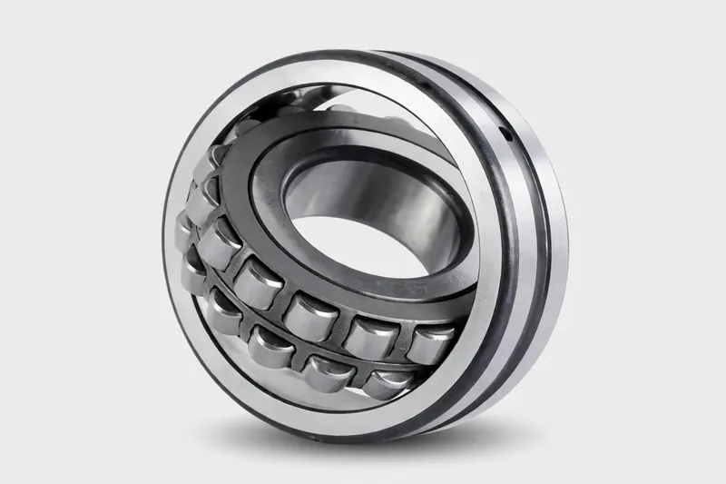
Сферические роликовые подшипники серии CA имеют сепараторы из штампованной стали с симметричными роликами, неподвижное внутрен…
Подробнее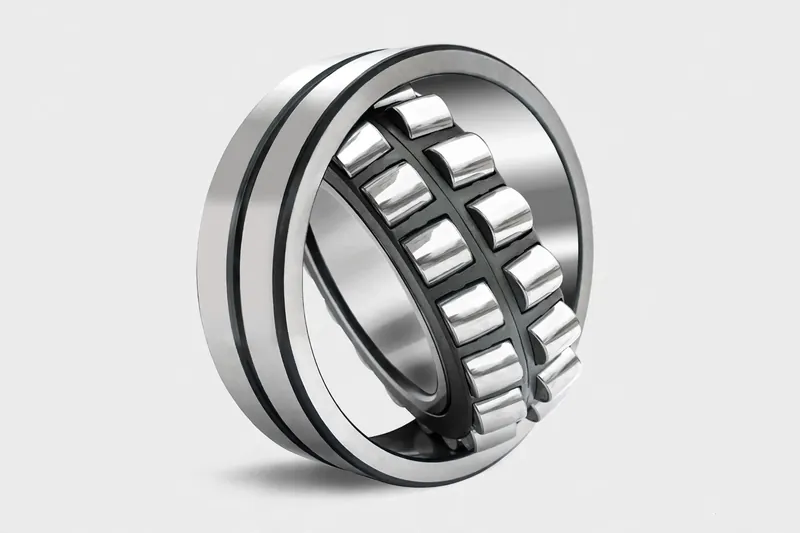
Подшипники серии CC имеют штампованные сепараторы и оптимизированную бомбинированность профиля роликов для снижения трения и…
Подробнее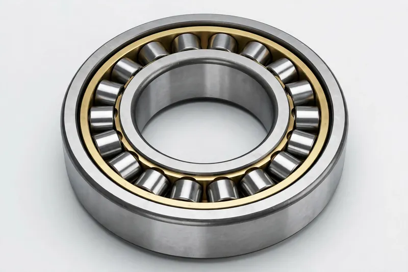
E1 — усовершенствованная конструкция: оптимизированные размеры и количество роликов заметно повышают динамическую грузоподъёмность…
Подробнее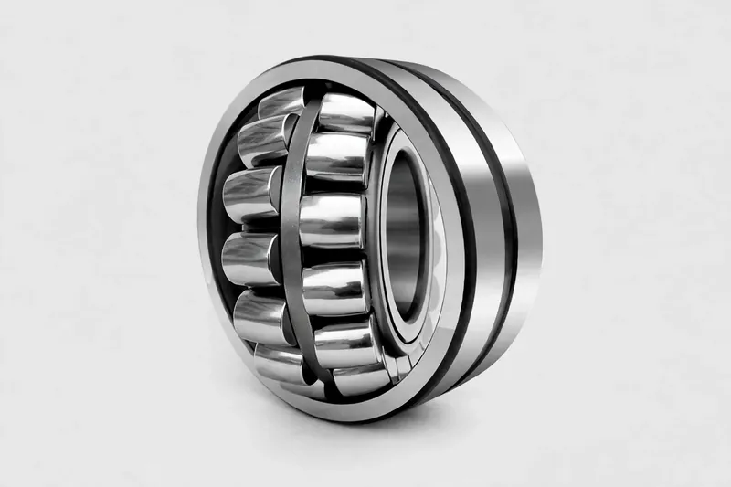
Сферические роликовые подшипники серии E имеют усиленные сепараторы из штампованной стали с высокой плотностью роликов…
ПодробнееЛинейный контакт роликов с дорожками качения обеспечивает значительно более высокую радиальную грузоподъёмность и жёсткость, чем у шариковых подшипников того же размера, при этом разъёмные кольца упрощают монтаж. Ассортимент включает однорядные (NU/NJ/NUP), двухрядные (NN/NNU) и четырёхрядные конструкции; прецизионные двухрядные типы достигают класса P4, а четырёхрядные типы являются стандартными подшипниками цапф валков для станов.
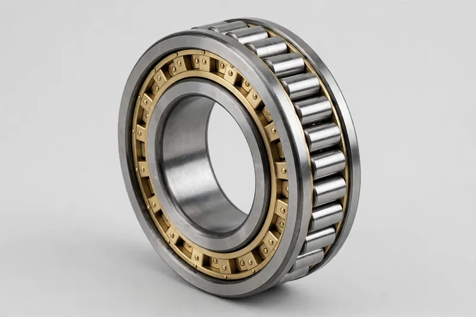
Линейный контакт роликов с дорожками качения обеспечивает высокую радиальную грузоподъёмность и жёсткость; разъёмные кольца…
Подробнее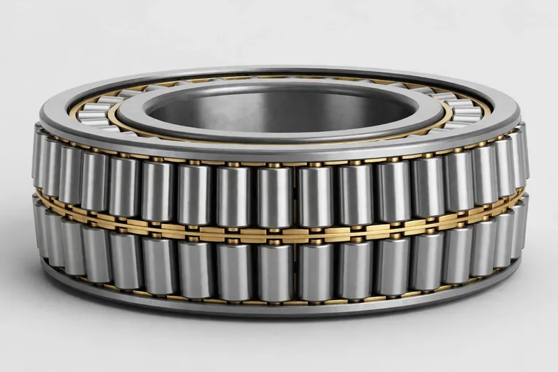
Двухрядные (NN/NNU) цилиндрические роликовые подшипники сочетают высокую жёсткость с малым радиальным сечением…
Подробнее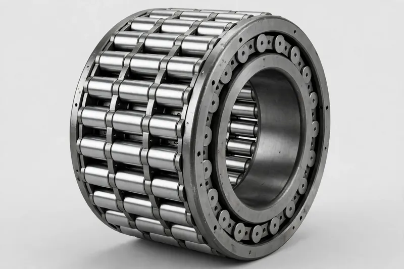
Четырёхрядные цилиндрические роликовые подшипники обеспечивают максимальную радиальную грузоподъёмность в компактной подушке и…
ПодробнееКонические роликовые подшипники воспринимают комбинированные радиальные и осевые нагрузки, при этом нагрузка передаётся по углу контакта роликов с высокой эффективностью. Однорядные типы подбираются парами для заданного зазора; двух- и четырёхрядные типы поставляются с заводской регулировкой для быстрой установки — ступицы, шпиндели, редукторы и цапфы валков.
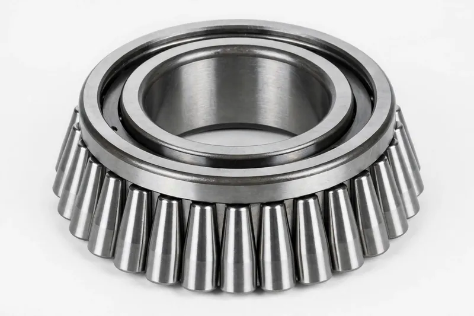
Однорядные конические роликовые подшипники воспринимают комбинированные радиальные и односторонние осевые нагрузки; разъёмная конструкция…
Подробнее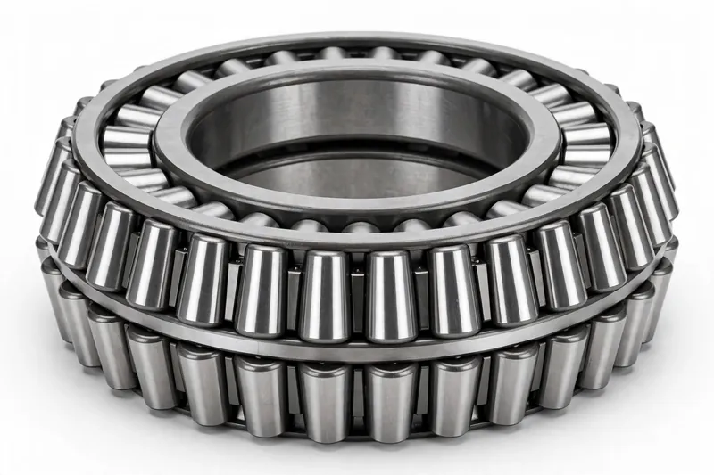
Два ряда роликов имеют общее наружное кольцо и воспринимают осевые нагрузки в обоих направлениях, а также тяжёлые радиальные…
Подробнее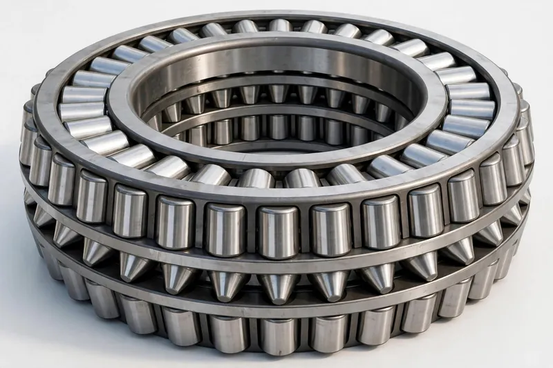
Четырёхрядные конические роликовые подшипники сочетают очень высокую грузоподъёмность с ударопрочностью для прокатных станов…
ПодробнееУпорные подшипники воспринимают осевые нагрузки. Сферические упорные роликовые подшипники сочетают очень высокую осевую грузоподъёмность с самоустановлением для гидротурбин и вертикальных электродвигателей; упорные шариковые подшипники компактны и разъёмны для чисто осевых нагрузок при умеренных скоростях — крюки кранов, вертикальные насосы, принадлежности станков.
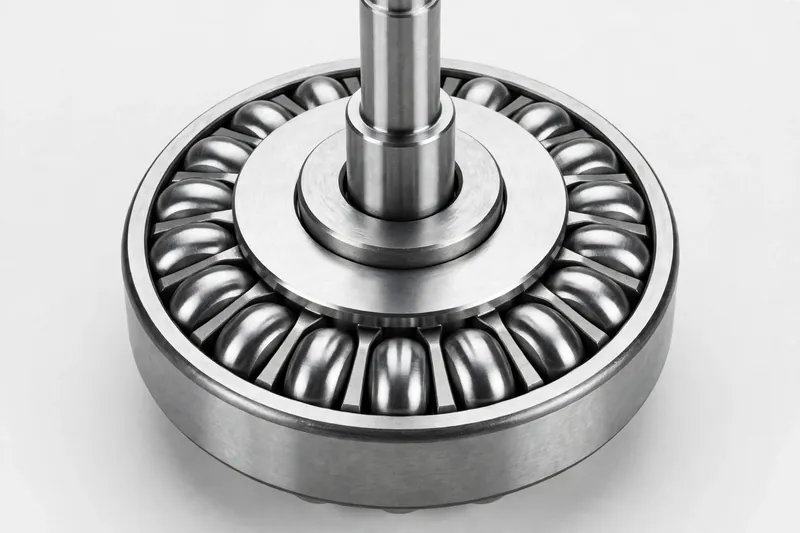
Сферические упорные роликовые подшипники воспринимают очень высокие осевые нагрузки, допуская при этом некоторую радиальную нагрузку и…
Подробнее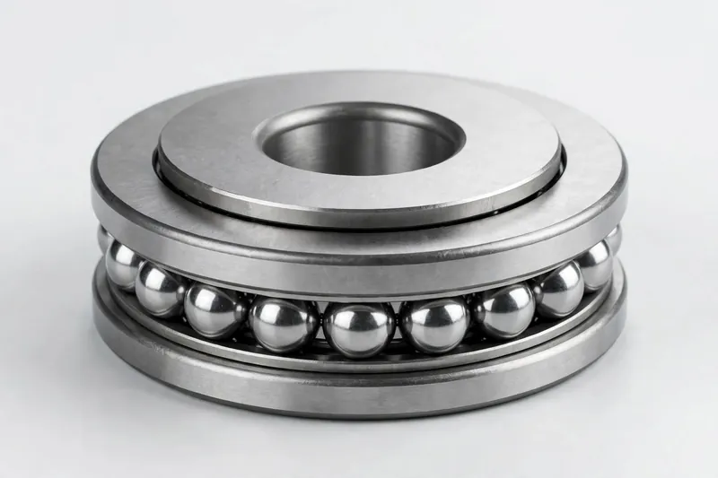
Упорные шариковые подшипники состоят из тугого кольца, свободного кольца и шариково-сепараторного узла и воспринимают…
ПодробнееСамый распространённый подшипник качения: простой, с низким трением, очень высокой предельной скоростью, воспринимающий радиальные и двунаправленные осевые нагрузки. Открытые, закрытые защитными шайбами (Z/2Z) и уплотнённые (RS/2RS) исполнения поставляются заполненными смазкой для необслуживаемой работы в электродвигателях, вентиляторах, насосах и общем машиностроении.
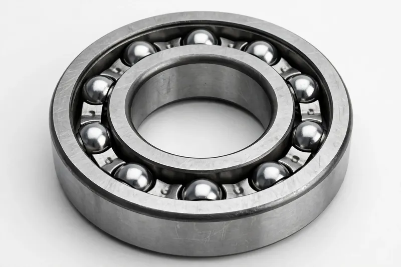
Простые по конструкции, с низким трением и очень высокой скоростью, радиальные шариковые подшипники воспринимают…
Подробнее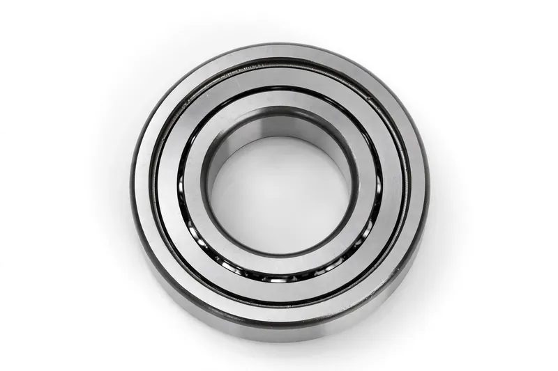
Исполнения Z/2Z имеют металлические защитные шайбы с одной или обеих сторон для защиты от пыли, поставляются со смазкой на весь срок службы…
Подробнее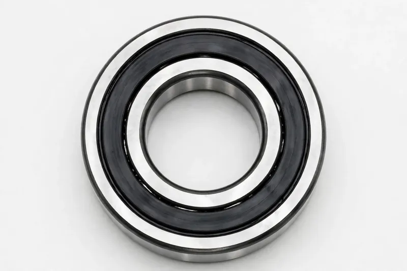
Исполнения RS/2RS имеют контактные уплотнения из NBR для лучшей защиты от пыли и воды, чем защитные шайбы, заполнены…
ПодробнееРадиально-упорные шариковые подшипники воспринимают комбинированные радиальные и односторонние осевые нагрузки при углах контакта 15°/25°/40°; пары обеспечивают двунаправленную фиксацию и преднатяг с отличным поведением на высокой скорости. Четырёхточечные конструкции воспринимают двунаправленную упорную нагрузку в одном компактном подшипнике — шпиндели, компрессоры, поворотные венцы, строительная техника.
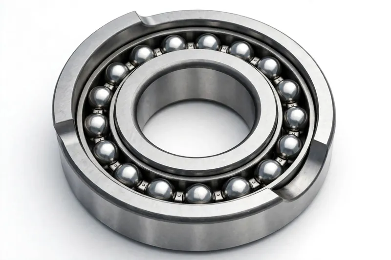
Они воспринимают комбинированные радиальные и односторонние осевые нагрузки; больший угол контакта повышает осевую грузоподъ…
Подробнее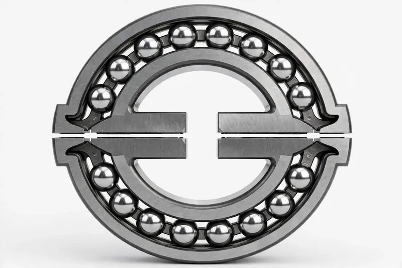
Персикообразная внутренняя дорожка качения позволяет одному подшипнику воспринимать осевые нагрузки в обоих направлениях, а также некотор…
ПодробнееЭквивалентны паре однорядных радиально-упорных подшипников, установленных спина к спине с общим наружным кольцом; они воспринимают двунаправленные осевые нагрузки и опрокидывающие моменты при простом монтаже и компактных размерах. Серия 32/33M имеет массивные латунные сепараторы; серия 4200/4300 поставляется открытой, с защитными шайбами или уплотнениями.
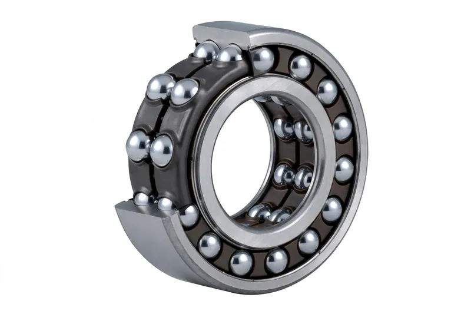
Серия 32/33M имеет массивные латунные сепараторы с расположенными спина к спине рядами шариков для восприятия двунаправленных осевых нагрузок…
Подробнее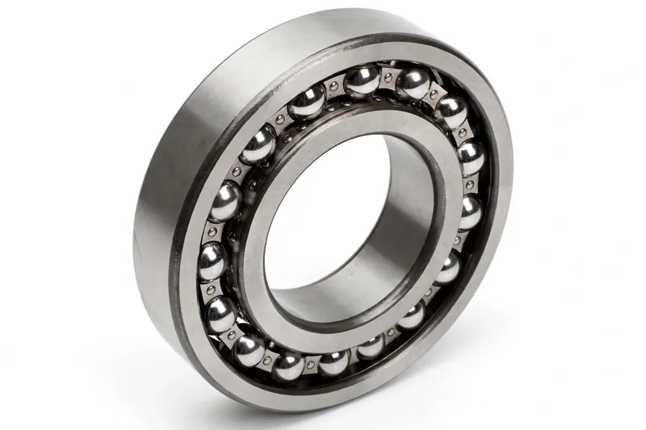
Компактное сечение и хорошая жёсткость; открытые, закрытые защитными шайбами (Z) и уплотнённые (RS) исполнения подходят для электродвигателей, редукторов…
ПодробнееОсновной компонент систем опорных валков многовалковых станов холодной прокатки: высокая точность наружного диаметра, равномерная толщина стенки и исключительная жёсткость, напрямую определяющие точность толщины полосы. Доступны классы P4/P2, подобранные под станы Сендзимира и 20-валковые станы, с доработкой по модели стана.
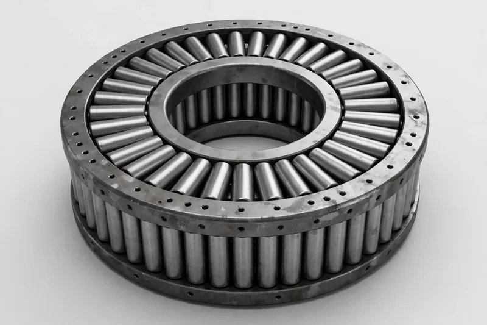
Опорные подшипники для многовалковых станов холодной прокатки отличаются высокой точностью наружного диаметра, равномерной…
ПодробнееСферическая наружная дорожка качения обеспечивает отличное выравнивание, компенсируя прогиб вала, погрешности монтажа и несоосность нескольких подшипников при низком трении и высокой предельной скорости. Открытые и закрытые исполнения подходят для длинных, менее жёстких валов в вентиляторах, текстильном и пищевом оборудовании.
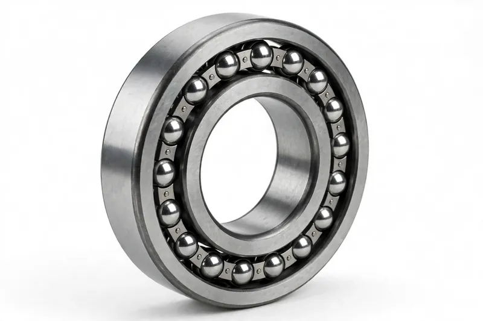
Сферическая наружная дорожка качения обеспечивает отличное выравнивание, компенсируя прогиб вала и погрешн…
Подробнее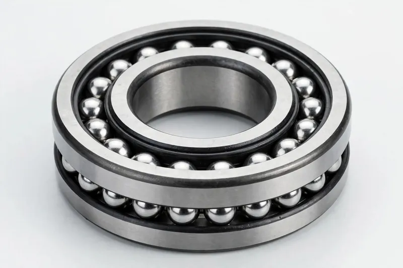
Закрытые исполнения самоустанавливающихся шариковых подшипников поставляются заполненными смазкой и не требуют обслуживания после…
ПодробнееК ассортименту добавлены ещё четыре типа подшипников: игольчатые роликовые подшипники и линейные шариковые подшипники с полными стандартными таблицами моделей, а также ступичные узлы для конкретных транспортных средств и железнодорожные буксовые подшипники, поставляемые по размерам транспортного средства и оси. Все типы доступны с наружным диаметром до 600 мм.
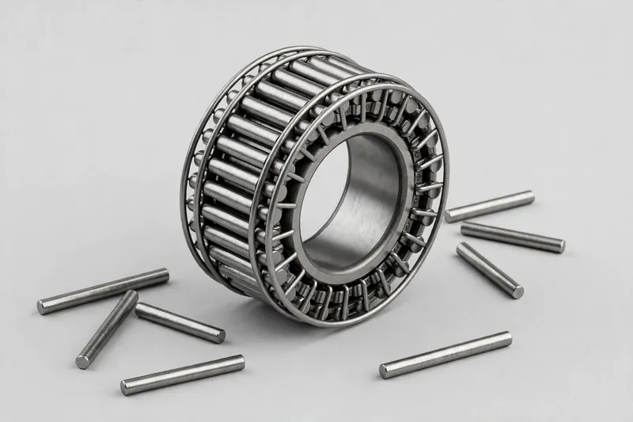
Тонкие цилиндрические ролики обеспечивают высокую радиальную грузоподъёмность в компактном габарите; NK работает по дорожке качения вала, NA49 имеет внутреннее кольцо.
Подробнее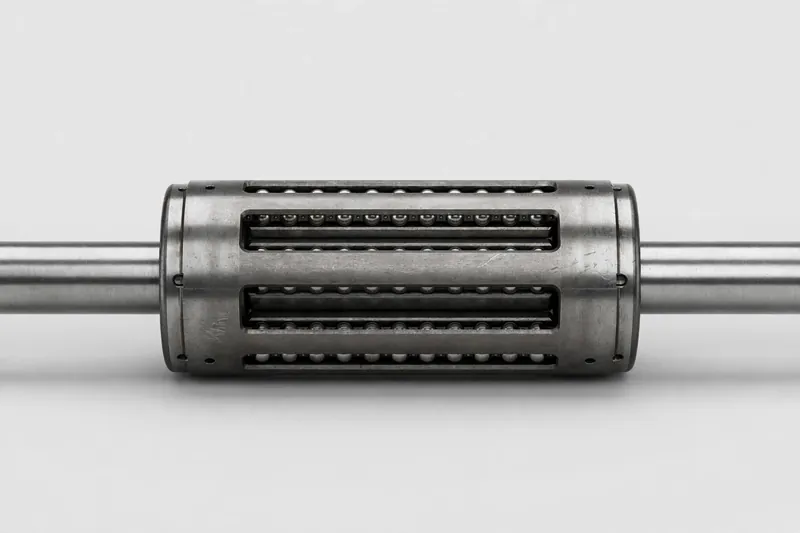
Ряды рециркулирующих шариков направляют вал при прямолинейном движении с низким трением; компактная серия LBBR и более нагруженная серия LBCR.
Подробнее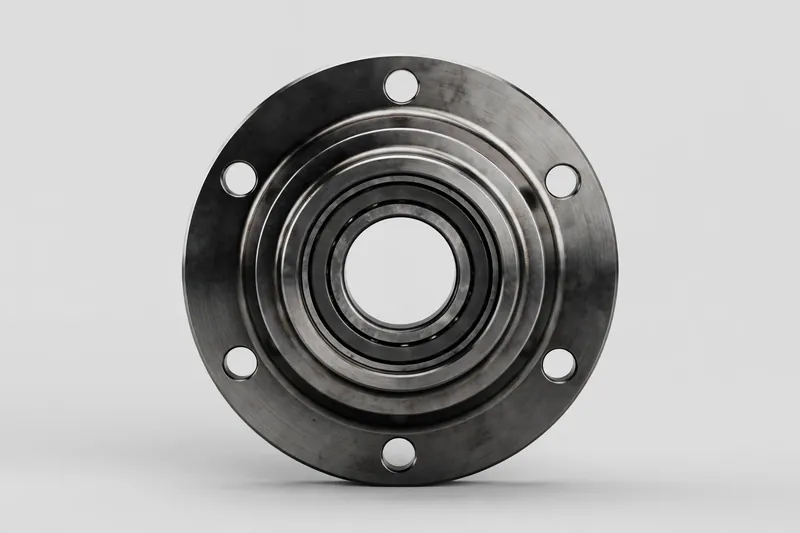
Предварительно отрегулированные необслуживаемые ступичные узлы для легковых и коммерческих автомобилей, при необходимости — с магнитными уплотнительными кольцами ABS.
Подробнее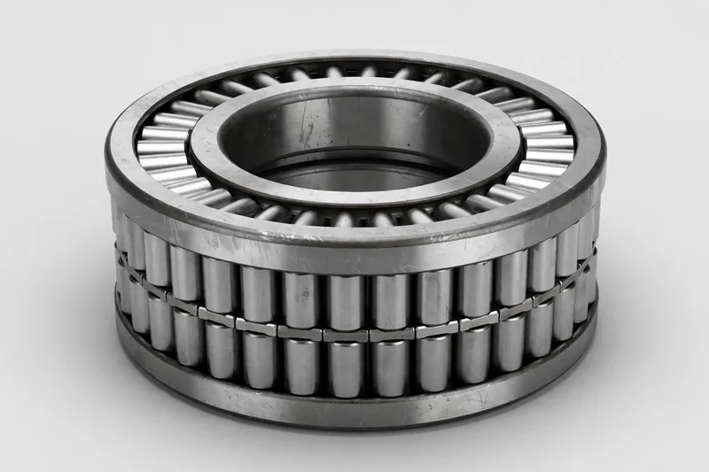
Тяжёлые буксовые подшипники для пассажирских вагонов и грузовых вагонов, в стандартном габарите с наружным диаметром до 600 мм.
Подробнее